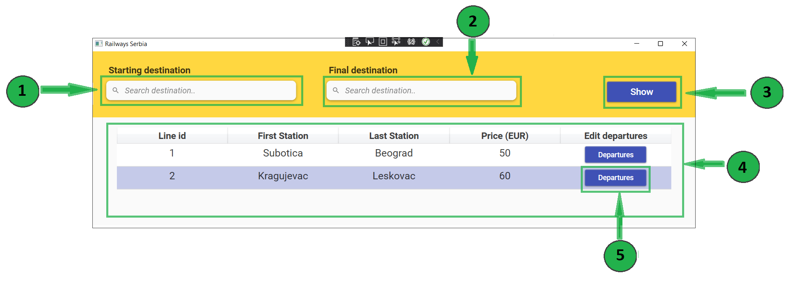

On this page you can search for lines and select one for which you want to change, add or delete departures. In order to search for lines, you can first enter your search criteria. Initially, all lines in the system are displayed.

Start typing in Starting destination field to search for your starting destination.
You can click on one of the suggested options to choose it.
Start typing in Final destination field to search for your final destination.
You can click on one of the suggested options to choose it.
Click on the Show button to display departures going from your start destination to final destination.
In the table below you can see all the lines that meet your search criteria.
To see details of line, click on the table row that represents wanted line.
If you want to edit, add or remove departures for this line, you should click on the button Departures on the left side of the table